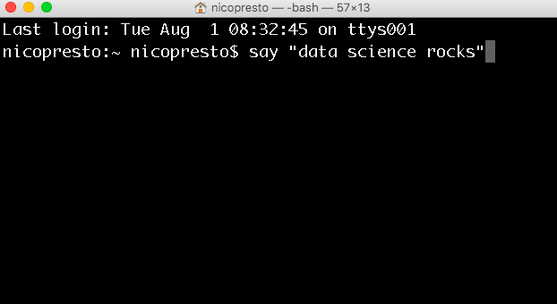
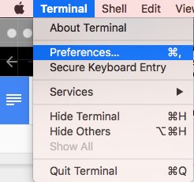
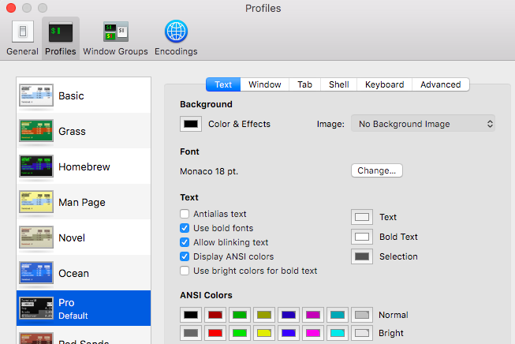
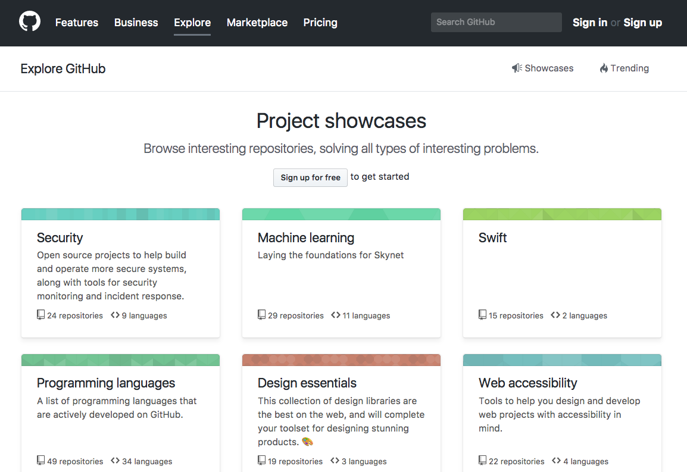
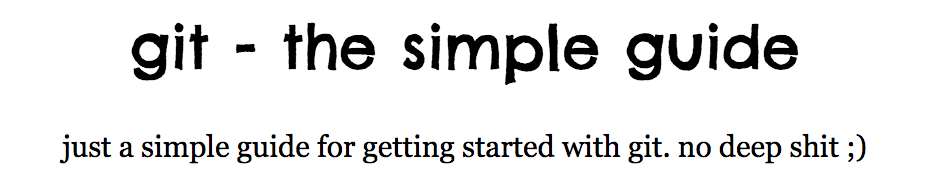
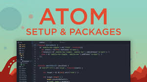
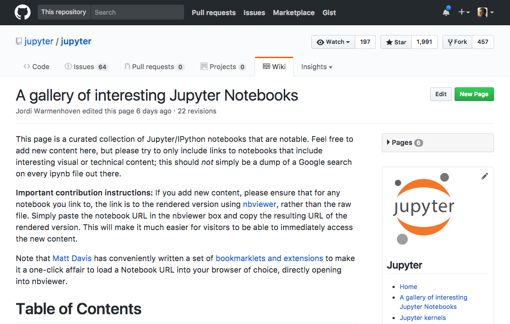

CH 0 - Getting Started
Chapter Contents:
0) Core setup for your Mac (Quickstart)
1) Package Manager (Homebrew)
2) Scripting language (Python - Anaconda distro)
3) Version Control (Git)
4) Code Editor (Atom)
5) Lab notebook (Jupyter)
0) Core setup for your Mac (Quickstart)
Options to open your terminal:
Press CMD⌘+spacebar and typing “terminal” in Spotlight Search (hint: it autocompletes as "Terminal.app" ... so you can press enter after typing the first few letters e.g. "te")
Click on "terminal" in your dock

Opening “Applications/Utilities/Terminal.app” in Finder
Terminal looks like this:

Yours may be transparent and the fonts may be small. You can change this in the preferences. The black background with white text is the “Pro” profile; I like to bump the font up to ~18pt.


Quickstart installation (tl;dr)
If you don’t feel like reading details about the tools, just run these scripts in the terminal and you’ll be good to go with the core setup:
# 1 - install and update homebrew (package manager)
ruby -e"$(curl -fsSL
https://raw.githubusercontent.com/Homebrew/install/master/install\
)"
brew update && brew upgrade
# 2 - Install Anaconda Python (scripting language)
brew cask install Anaconda
# 3 - Install Git (version control)
brew install git
# 4 - Install Atom (code editor)
brew cask install atom
# 5 - Open a Jupyter (lab notebook) and preview at http://localhost:8888/
jupyter notebook
1) Package Manager (Homebrew)
Linux remains my favorite OS. Almost every website you visit is run by a Linux-flavored server. One of the best features of Linux are the package managers. Think of a package as being an “application” or “program that you install, that can range from a full text editor (atom) or scripting language (e.g. Python) to a helper script that auto-completes code for you.
The benefit of package managers is that if you can keep your code separate from your operating system (OS) and other software. Otherwise, as you install stuff you could clobber your machine settings, slow things down, or introduce error to other projects due to dependency issues. A package manager keeps software installations separate. For example, by default, software installed by Homebrew is put in the folder /usr/local/cellar.
You can remove Homebrew and all the dependencies anytime you want without affecting your machine. You can also rebuild your software environment on other machines and get your team synchronized.
To install Homebrew
From Homebrew.com
# Install and update homebrew
ruby -e"$(curl -fsSL https://raw.githubusercontent.com/Homebrew/install/master/install\)"
brew update
brew upgrade
#list Homebrew installed software
ls /usr/local/cellar
2) Scripting language (Python - Anaconda distro)
I’m hesitant to recommend a particular vendor, but installing Python for scientific computing can be a challange. The Anaconda folks have resolved many of headaches (e.g. SciPy installation)
#install anaconda python with Homebrew
brew cask install Anaconda
The install takes a few minutes and ~3 GB
There is an alternative miniconda package that is minimalist and installs more quickly; however, it doesn’t have the scientific packages (the main benefit of Anaconda IMHO).
The alternative way to install python is to use Homebrew and Pip for the dependencies. This can lead to trip ups with dependencies SciPy. To resolve these you’ll need to get good at reading error messages. The best way to solve these is to paste the error message into Stack Overflow
Other users will suggest ways to resolve the dependency. Look for the solutions with the highest number of votes.
Here is a quick guide to getting started with Anaconda Python
https://conda.io/docs/test-drive.html
3) Version Control (Git)
Versioning is essential to good code management. You’ve probably heard of GitHub, which is where almost all open source software is developed. However, the public code you find is this is just the tip of the iceberg, lots of business manage their code in private GitHub or GitLab repositories. Also you should check the license before you use code (look for a LICENSE file), just because it is on Github does not mean it is open source.
From https://github.com/explore

To install:
# install Git
brew install git
Git is a distributed version control system. The basic concept is like playing a video game, when you are about the face the boss at the end of a level you might save your game, as “savegame1”, then if you fail you may go back to that, at the next boss you might “savegame2”, etc… This creates a confusing chain of semi-meaningful names. Now you may need to revert to one of these previous versions as you advance, but the nomenclature (arbitrary numbering) quickly gets out of hand.
With Git you can make a “commit” (~save) as you work and type a “commit message” to remind yourself, and others, of what you did. You can also create a “branch” of your code, that won’t affect the main code, but is where you are develop a new feature. Importantly, you can easily collaborate with others. Just like Google Docs revolutionized the way we edit docs, you can all be working on the same code base; however, you wouldn’t want edits by others edits to suddenly jump into your code and break things. So, there are cultural practices to how the code is managed and merged, as well as gate keepers to the Master branch. Essentially, you can work in separate branches, named for the functionality they are adding (e.g. “fixing analysis bug”), when you are ready you propose a “pull request” to a Master branch in the main repo to be peer reviewed and merged by your collaborators. We’ll discuss social coding practices and conventions later. Note that Git can be used for more than just code, you can manage many file types like images, data, and documents. This is useful for building a web site but also can be used to write books like this Guide (written with Gitbook).
To create a git repository in a folder
git init
That will create a tiny system file (“.git”) that manages all the "saves" of your code. Here is an intro guide to help you get started with Git:
http://rogerdudler.github.io/git-guide/

4) Code Editor (Atom)

Code editors are like tricked out word processors (e.g. MS Word or Pages) with features like syntax highlighting, pretty layouts, autocompletion, and packages to add language specific enhancements.
To install
# Install Atom with homebrew
brew cask install atom
Advantages
Built in editors are minimalist and obscure (e.g. Nano, Pico); you need a tutorial just to figure out how to insert edits or exit the editor.
Power editors (e.g. Emacs, Vim) have a steep learning curve, are a gazillion years old, and require constant configuration maintenance. That said, they’re awesome, retro, and nerdy so check them out sometime.
Atom mostly works out of the box
It is future friendly and browser based, e.g. usable on Google Chromebook and browser-only devices
It’s future relevant as social coding moves to the web/cloud
Tips
Folder view on the left side is great for seeing your whole project
You can add packages to enhance Atom via Packages>Settings View>Manage Packages
As of 2017, you can manage your Git/Github interactions directly through Atom with a popout view on the right side that shows changes, commits, and staged file. It can be a great way to diff and merge branches.
Launch a folder (e.g. myworkfolder) in atom directly from the terminal
atom myworkfolder
5) Lab notebook (Jupyter)
Jupyter notebooks come pre-bundled with Anaconda. They are a revelation in a data scientist's workflow. If you are figuring out a problem and want to know where to start, you could probably find a publicly hosted notebook laying out all the steps. Copying (forking) and modifying these shared notebooks is a great way to get started with your own coding adventures.
To install
jupyter notebook
This launches a notebook in your web browser. You should read the messages in terminal after running the “jupyter notebook” command. It may suggest you paste a web address into your browser to launch the notebook, e.g. http://localhost:8888
Jupyter notebooks have revolutionized my workflow. The difference between these and a code editor (e.g. Atom), is that you can work on an endless scroll, chasing down data trends like a stream of consciousness and leaving notes for yourself on what you’ve tried. You can also embed graphics and other outputs inline, so you don’t need to have multiple windows open. Lastly, they are easy to share with colleagues. You can even setup a centralized server in your office with JupyterHub.
You’ll eventually probably tidy up your code into a series of files, perhaps minifying (minimizing) or optimizing your code. This is a natural evolution.
You can find gazillions of fully-annotated Jupyter notebooks in the wild, in places like GitHub.
